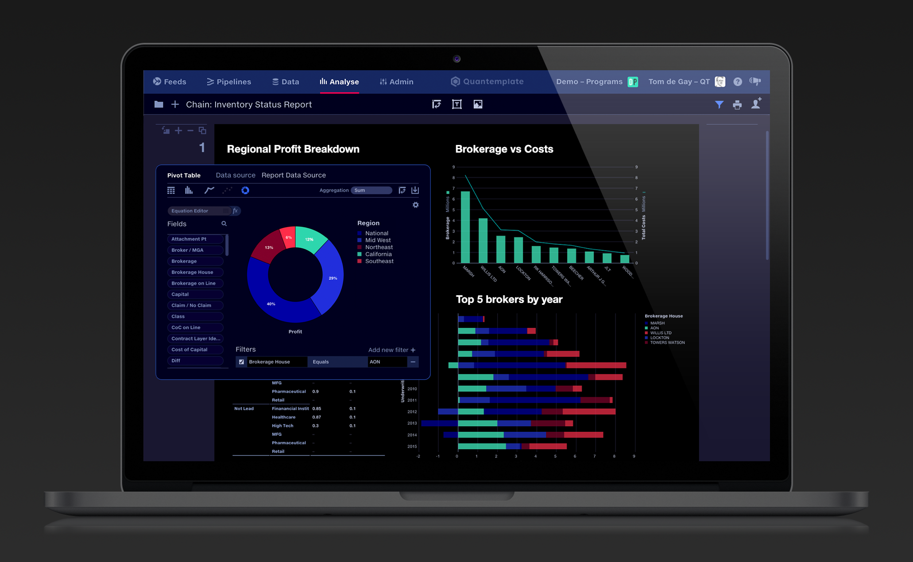

Problem
Ferraris on country roads
Quantemplate’s first product offering was a high-performance, drag-and-drop analytics suite. In 2013, there was nothing else like it.

We had gone to insurers with these tools, but they were struggling to get their data into a form that could be analysed. One client put it memorably:
Quantemplate is a Ferrari, but our data is on country roads. COO, major European insurance company
Their data arrived from hundreds of sources, in no common format. Cleaning it up by hand was slow, expensive and error-prone, and it had to be done again every time new data came in.
So we set about building a race track, taking everything we had learnt from building the analytics tools and applying it to data clean-up and enrichment. And it all needed to be no-code, to empower the business user.
Key decisions
Step 1Give pipelines a simple hierarchy
Implementation
Step 2Listen and evolve
I made sure I was in every client meeting or training session. I also used the product extensively, becoming deeply involved in production implementations and building many pipelines myself.
This helped me understand where the design became difficult under the complexity of real data. Following data through a pipeline was one recurring problem, confirmed by conversations with other users. Managing the wide variety of inputs and outputs in a pipeline, ensuring all users had access to them and comparing file sizes or row counts was another.
1-minute demo
Outcome
A platform for product development
Pipelines became our platform for product development that is still improving today, delivering new capabilities and refining in response to feedback.
- 17kRuns per year
- 3.4bnRows processed annually
- 34+Different data domains
- 100%Sales attributed to pipelines
The work began with getting the full transformation capability into users’ hands. Sustained refinement then came from observing how clients used it, building pipelines ourselves and following the workarounds that showed us what the product needed next.
Pipelines have driven the growth of the business and are now responsible for 100% of engagements and sales, processing 3.4bn rows per year with 17k pipeline runs in client production environments.